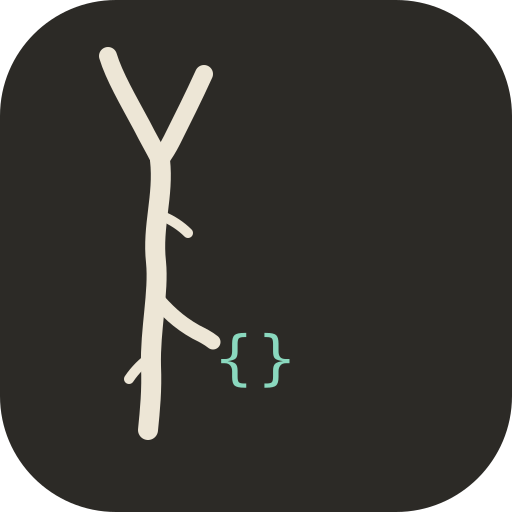

周易
蓍草法起卦，输出本卦、变爻与之卦，附 64 卦全文。
oraclebone iching --method yarrow

OracleBone 卜骨MCP server · v8.2.0 · MIT
蓍草概率、八字历法、64 卦全文——全部脚本计算，零幻觉。一次安装，Claude、Cursor、Gemini 都能用。
uvx oraclebone-mcp
★ GitHub
PyPI 已发布 · CI 全绿 · Docker 支持
hexagram.cast() 输出示例
{"hexagram": "䷾ 既济",
"method": "yarrow-stalk",
"seed": null,
"audit": "reproducible"}
为什么做这个
本项目把抽取与解释分开：本地脚本用系统随机或传统概率生成牌面、卦象或四柱，AI 只基于这个具体结果进行解读。
方法论严谨性
已包含技能
蓍草法起卦，输出本卦、变爻与之卦，附 64 卦全文。
oraclebone iching --method yarrow
真太阳时排四柱、五行、纳音；生肖按年柱口径，另附农历口径对照。
oraclebone bazi --datetime 1990-05-20T14:30
大阿卡纳，牌阵可选，支持逆位，Fisher-Yates 洗牌。
oraclebone tarot --spread three-card --reversals
农历数字或公历时间双起卦法，缺参报错直接指出缺什么。
oraclebone xiaoliuren --method numbers --month 3 --day 12 --hour 7
30 秒接入
claude mcp add oraclebone -- uvx oraclebone-mcp
Settings → MCP → 粘贴 JSON 配置
gemini mcp add oraclebone
stdio JSON-RPC · 标准 MCP 协议
或者直接用 CLI
pip install oracleboneoraclebone iching --method yarroworaclebone bazi --datetime 1990-05-20T14:30:00oraclebone tarot --deck major --spread three-card --reversals安全边界